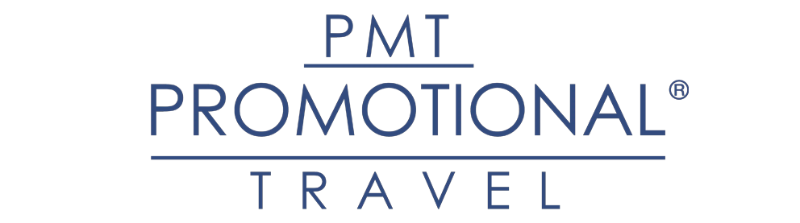
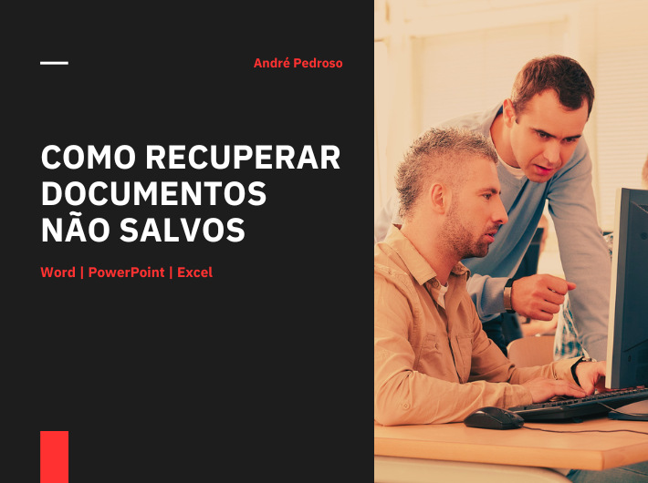
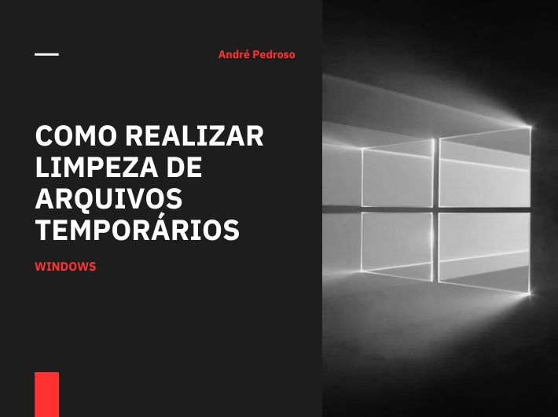

Perfil Profissional
André Pedroso
Analista de Infraestrutura
Infraestrutura Robusta e Gestão Estratégica para Ambientes Críticos
Meu nome é André Pedroso, sou profissional de Tecnologia da Informação com mais de 15 anos de experiência consolidada na liderança técnica, administração de ambientes Microsoft e gestão de infraestrutura corporativa. Minha formação dual em Redes de Computadores e Administração de Empresas me confere uma visão ampla para conectar a complexidade técnica aos objetivos estratégicos do negócio. Para consolidar essa atuação frente a projetos e processos de alto impacto, atualmente curso pós-graduação em Gestão e Governança de TI.
Atualmente como Analista de Infraestrutura e Suporte na Marko Sistemas Metálicos, minha missão é garantir a alta disponibilidade, a segurança e a governança dos serviços de TI.
Minha carreira é marcada por atuação em grandes organizações — Promotional Travel, Tupperware Brands, Colégio Marista e SEEDUC/RJ, onde fui fundamental em:
- Liderança técnica de projetos de modernização e migração de sistemas.
- Suporte a ambientes críticos e linhas de produção.
- Garantia de continuidade operacional em regimes de plantão.
Possuo um perfil analítico, orientado a resultados e focado na otimização da eficiência. Busco sempre alinhar soluções tecnológicas às necessidades estratégicas da organização, simplificando rotinas, liderando entregas e aprimorando a experiência do usuário final.
Expertise Técnica e Visão de Negócio
Infraestrutura & Redes
Administração de servidores, redes avançadas e conectividade.
Cloud & Microsoft 365
Gestão de ambientes Azure, licenciamento e governança M365.
Segurança & LGPD
Proteção de dados, conformidade e auditoria de sistemas.
Liderança de Equipes
Gestão de pessoas e projetos focada em alta produtividade.
Pensamento Estratégico
Alinhamento da TI aos objetivos financeiros e operacionais.
Comunicação Assertiva
Tradução de complexidade técnica para linguagem executiva.
Formação
Tecnologia da Informação
Colégio Realengo
Curso Técnico | Conclusão 2008
Administração
Centro Universitário São José
Curso Superior | Conclusão 2012
Redes de Computadores
Unisuam
Superior | Conclusão 2022
Gestão e Governança de TI
Unisuam
Pós-Graduação | Cursando
Além do Suporte: Tecnologia como Pilar Estratégico
A TI não é apenas suporte, é estratégia Unir a lógica das Redes de Computadores a visão da Administração, é o que me permite entregar soluções que vão além do técnico e realmente impulsionam o resultado do negócio.


Experiência Profissional
Jornada Profissional
Especialista em sustentação de infraestruturas críticas e gestão de ambientes híbridos. Minha trajetória é focada em garantir a continuidade operacional através do monitoramento proativo e da administração eficiente de servidores e redes. Com vasta experiência no suporte estratégico a grandes parques de usuários, transformo a complexidade técnica em produtividade e estabilidade para o negócio.
Analista de Infraestrutura e Suporte
Marko Sistemas Metálicos
Liderança técnica da infraestrutura e do suporte de TI, orientando a equipe, organizando prioridades e padronizando processos, com foco em disponibilidade, segurança e continuidade operacional. Gestão da infraestrutura: administração de servidores físicos e virtuais, sistemas operacionais, redes e videomonitoramento. Monitoramento proativo dos ambientes de TI, com atuação na identificação e resolução de falhas. Participação em projetos de modernização tecnológica, acompanhando fornecedores nas etapas de alinhamento técnico, implantação, validação e entrega. Desenvolvimento de mais de 30 materiais de apoio, incluindo manuais, documentação técnica e fluxogramas, promovendo a padronização dos procedimentos. Participação em cotações e comparação de propostas, contribuindo para negociações com economia de pelo menos 10%.

Analista de Suporte Pleno
ALLLIG (Promotional Travel Viagens e Turismo)
Responsável pela administração completa do ambiente Microsoft Office 365, abrangendo a gestão estratégica de usuários, grupos e o ciclo de vida de licenciamento. Atuação cno suporte técnico de 1º e 2º nível para um parque de mais de 170 colaboradores. Expertise na gestão de telefonia IP via plataforma 3CX e suporte especializado a sistemas corporativos críticos, como Reserve, E-Latam, E-Gol, TravelPort e ERP Benner.
Analista de Suporte N2
TIQS (Tupperware Brands)
Atuação como responsável técnico da equipe de suporte N1. Trabalho realizado em escala 12x36 no turno da noite, garantindo cobertura técnica fora do horário comercial e a continuidade operacional dos sistemas. Gerenciamento do Active Directory. Administração de servidores de impressão, File Server e outros recursos de infraestrutura. Monitoramento contínuo de sistemas críticos através das plataformas Grafana e Zabbix, assegurando a detecção e resolução de incidentes de maneira ágil. Suporte tecnológico às linhas de produção da fábrica.
Projetos Estratégicos
Soluções de alto impacto conduzidas com visão estratégica e foco em resultado: da modernização da rede Wi-Fi corporativa à estruturação de políticas de segurança no Office 365, passando pelo rollout de grandes parques computacionais. Como liderança técnica, alinho fornecedores, equipes e requisitos de segurança para entregar conformidade com a LGPD, redução de custos e uma infraestrutura segura, escalável e padronizada.
Fábrica Conectada
Empresa: Marko Sistemas Metálicos
Modernização da infraestrutura Wi-Fi corporativa, com a substituição de equipamentos legados Twibi por soluções UniFi para ganhar estabilidade, cobertura, desempenho e gestão centralizada da rede sem fio. Acompanhei tecnicamente a empresa contratada nas etapas de implantação, validação e entrega e, após a instalação, assumi a configuração e a administração do ambiente: segmentação de SSIDs, políticas de acesso e RADIUS, integração com as regras de firewall e boas práticas de segurança. O resultado foi uma melhor experiência para os usuários, maior controle administrativo e a padronização da infraestrutura Wi-Fi.
Ver arquitetura da soluçãoOutros Projetos
Quer detalhes técnicos de algum projeto?
Posso apresentar o escopo, as decisões e os resultados de cada iniciativa em uma conversa.
Fale comigoMapa de Tecnologias
Selecione uma tecnologia para ver onde eu a apliquei, ou uma experiência para ver as tecnologias envolvidas.
Tecnologias
Infraestrutura e redes
Microsoft e nuvem
Monitoramento
Segurança e governança
Gestão
Onde apliquei
Experiências
Projetos
Certificações
Conquistas e Foco Profissional
Experiência
+15 Anos
Tempo dedicado e comprovado em Tecnologia da Informação
Atendimento
+1500 Usuários
Suporte técnico para colaboradores em diferentes setores
Disponibilidade
+99% Uptime
Garantia em ambientes críticos e regimes de plantão
Liderança
+10 Projetos
Modernização de infraestrutura e gestão de ativos de TI
Governança de TI
Mais de uma década dedicada à excelência operacional, sustentando ambientes complexos e liderando a modernização de ativos tecnológicos de ponta a ponta.
Manuais e Dicas de TI
Desenvolvi este acervo de guias práticos para capacitar usuários, promover as melhores práticas de segurança digital e otimizar a resolução de problemas comuns do dia a dia, garantindo mais agilidade e eficiência no uso das ferramentas corporativas.

Saiba como recuperar documentos perdidos ou não salvos no Word, Excel e PowerPoint de forma rápida.
Download
Descubra como limpar arquivos temporários do Windows para liberar espaço e melhorar o desempenho do seu PC.
DownloadProteja sua segurança digital aprendendo a identificar os sinais de e-mails suspeitos e evitar golpes virtuais.
DownloadGostou do conteúdo?
Novos manuais são desenvolvidos regularmente para auxiliar no suporte preventivo.
O que dizem os colegas e parceiros sobre meu trabalho
Testimonials are shown in their original language (Portuguese).